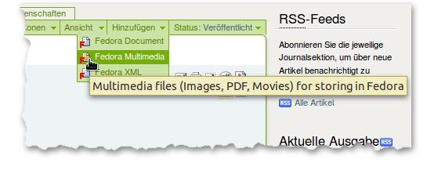
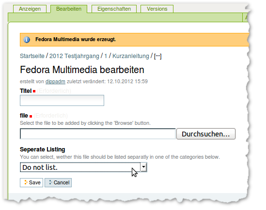

Unter Zusatzmaterial (supplementary material) lassen sich alle Bestandteile des Artikel zusammenfassen, die nicht durch die Konvertierung des Artikels aus dem RTF erhalten werden. Dazu gehören z.B. Bilder in höheren Auflösungen, Multimediale Inhalte oder der Volltext des Artikel im PDF Format.
Diese Zusatzmaterialien werden über das “Hinzufügen” Menu in der grünen Bearbeitungsleist ergänzt. Zur Verfügung stehen “Fedora Document”, das für textbasierte Materialen wie HTML Datein gedacht ist, und “Fedora Multimedia” für alle binären Formate: Bilder, PDF Dateien, Film- und Audiodateien, etc.

Hinzufügen von Zusatzmaterial über das “Hinzufügen” Menü.
In dem dann folgendem Formular muss der Titel angegeben werden und die Datei ausgewählt werden. Das Auswahlfeld “seperate Listing” entscheidet darüber, wie das Zusatzmaterial eingebunden wird:

Das Bearbeitenformular für Fedora Multimedia Objekte.
Für einige Multimediadateien werden spezielle Templates angeboten, die über das “Ansichten” Menu auswählbar sind. Sie erlauben neben dem standardmäßig angebotenem Download u.a. das direkte Abspielen von Audiodateien im Browser. Folgenden Ansichten/Templates stehen zur Auswahl:
Um eine Datei durch eine neue zu ersetzen, sollte sie nicht gelöscht werden und durch eine neue Datei gleichen Namens ersetzt werden. Sie kann ausgetauscht werden, in dem man über den “Bearbeiten” Reiter wieder die Bearbeitungsmaske aufruft und unter “file” die neue Datei zum Hochladen auswählt. Die übrigen Einstellungen können bleiben wie sie sind. Beim Speichern wird dann eine neue Version im Repository abgelegt und die Versionshistorie kann unter dem Reiter “versions” eingesehen werden. Diese Historie würde beim Löschen und komplett neu hochladen verloren gehen.